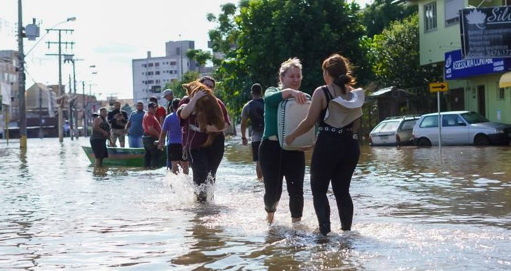
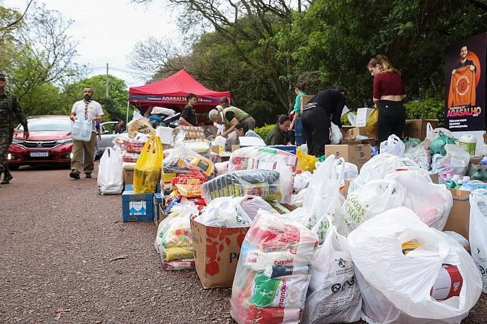

O Problema que Iremos Solucionar
As enchentes urbanas causam perdas humanas, materiais e interrupções críticas nos serviços essenciais das cidades.
Falta de informação em tempo real dificulta evacuação e proteção eficiente das pessoas em áreas de risco.

Tecnologias que Iremos Utilizar
Usamos GIS para mapear riscos e BIM para modelar estruturas urbanas vulneráveis com alta precisão.
A interface utiliza alertas sonoros, visuais e dados geolocalizados acessíveis via web responsiva.
Nossos Objetivos
Reduzir danos causados por enchentes com tecnologia acessível, rápida e confiável para todos os cidadãos.
Promover segurança, conscientização e agilidade na resposta a desastres naturais em centros urbanos.

Nosso Público-Alvo
Moradores de áreas de risco, gestores públicos e voluntários que atuam em situações emergenciais.
Inclui também órgãos de defesa civil e instituições voltadas à segurança urbana.

Benefícios da Solução
Mapas interativos, alertas personalizados e rotas de fuga garantem resposta rápida a enchentes iminentes.
Acesso facilitado a centros de acolhimento, colaboração cidadã e prevenção eficaz de novos focos de alagamento.

Como a Solução Poderá Ajudar no Dia a Dia
-
João: Como morador, desejo visualizar um mapa com as áreas de risco de enchente para avaliar minha segurança.
-
Lucas: Como usuário, quero receber alertas visuais e sonoros sobre enchentes iminentes para tomar decisões rápidas.
